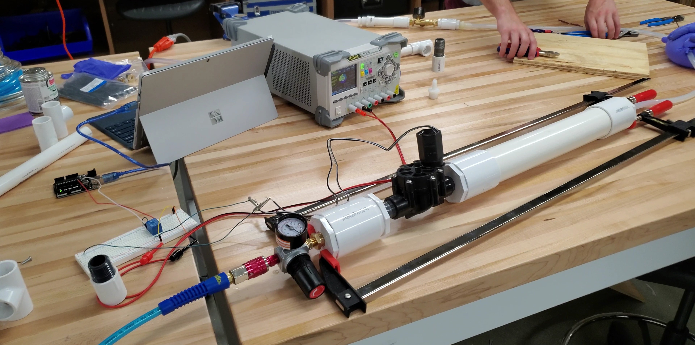
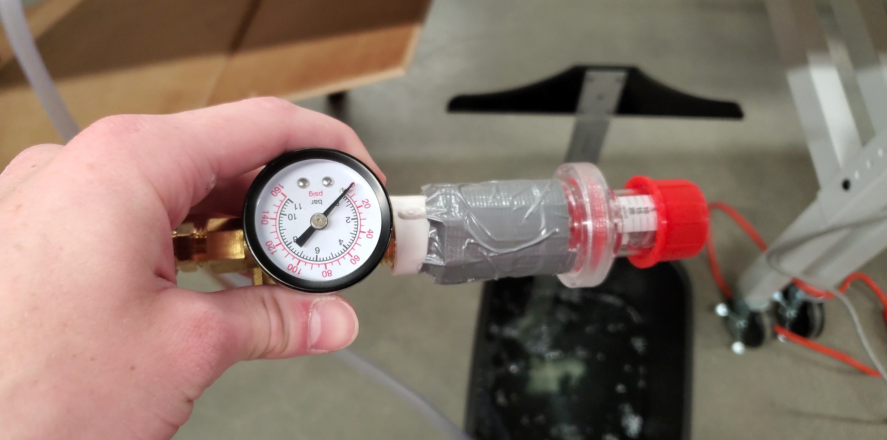

COVID-19 Emergency Response: Low-Cost Ventilator Design
The project aimed to engineer a low-cost, DIY ventilator using off-the-shelf components from local supply stores to address the shortage of ventilators in low-resource hospitals or hospitals running out of ventilators during the COVID-19 pandemic.
Resilience in Action
During my undergraduate studies, I was involved in an initiative undertaken by the biomedical engineering department of my institution to engineer a low-cost, DIY ventilator during the early stages of the COVID-19 pandemic. As a part of the project team, I contributed to the hardware development of the ventilation system, utilizing my talent as a "maker" to help source off-the-shelf components from local supply stores. Despite the challenging restrictions and regulations imposed by the pandemic, the team was able to successfully develop a working prototype of the low-cost ventilator, demonstrating resourcefulness, creativity, and interdisciplinary collaboration.
My involvement in this project provided me with valuable practical experience in managing real-world challenges, especially in navigating the regulations and restrictions associated with a rapidly evolving public health crisis. Working with experts from various fields, including biomedical engineering, mechanical engineering, and software development, allowed me to develop my skills in cross-disciplinary collaboration and innovative thinking. Overall, this project serves as an excellent example of how interdisciplinary collaboration and resourcefulness can be harnessed to address urgent societal needs, and I am proud to have been a part of it
Rapid Prototyping
This was when we were in the planning phase of the ventilator. I had gathered some materials from around the lab, and threw them together to give my team a quick visual of what this ventilation system could look like and be made out of.
 This is the inlet of the first version of the ventilator. The ventilator was provided air through a standard shop air compresser, because of this, we had to regulate the amount of pressure coming into our system through a hand controlled valve (far right blue and black valve). Next is the solenoid that was controlled by the electronics board to time the inspiratory breath (large black valve). Finally, there was a manual on/off valve after the solenoid valve for safety purposes (valve with blue knob).
This is the inlet of the first version of the ventilator. The ventilator was provided air through a standard shop air compresser, because of this, we had to regulate the amount of pressure coming into our system through a hand controlled valve (far right blue and black valve). Next is the solenoid that was controlled by the electronics board to time the inspiratory breath (large black valve). Finally, there was a manual on/off valve after the solenoid valve for safety purposes (valve with blue knob).

This is what the first version of the ventilator looked like. Our undergraduate team worked tirelessly to get this working in under 2 weeks. It was controlled by an Arduino Uno and some very basic code at this point. Much of the system was held together with clamps and tape to get an initial prototype working. In this prototype, we used a nitrile glove as the simulated lung model.
All ventilation systems require a PEEP valve. PEEP stands for positive end-expiratory pressure, and it is necessary to ensure that the alveoli remains inflated during ventilation. When we started prototyping, we did not have the specialized valve, however, we realized that we could use a simple bucket of water with the expiratory tube submerged to generate the same pressure as the PEEP valve.

This is a PEEP valve we were able to get our hands on. It was attached to the system initially through duct tape, however, in the later stages of the project this was replaced with a more secure attachment.
 This is what the final ventilation system looked like after a month of rapid prototyping. It was compatible with standard tubing typically used with hospital ventilators, and had a more realistice simulated lung model. There were also additional sensors added that could measure the pressue, temperature, and humidity of the breath being delivered to the simulated lung model.
This is what the final ventilation system looked like after a month of rapid prototyping. It was compatible with standard tubing typically used with hospital ventilators, and had a more realistice simulated lung model. There were also additional sensors added that could measure the pressue, temperature, and humidity of the breath being delivered to the simulated lung model.
This was some planning we did as we worked through the initial stages of the ventilator design. Here we were trying to find out the diameter of hospital tubing used in their ventilators. We were also narrowing down typical ventilator metrics such as tidal volume (TV), peak inspiratory pressure (PIP), respiratory rate (RR), inspiratory time (I), and PEEP.
 This is some more planning we did as we worked through the initial stages of the ventilator design. This was only two days later, and we in that time we had began to plan out what the ventilator should look like and how we could integrate the metrics that we defined in the prior planning session.
This is some more planning we did as we worked through the initial stages of the ventilator design. This was only two days later, and we in that time we had began to plan out what the ventilator should look like and how we could integrate the metrics that we defined in the prior planning session.